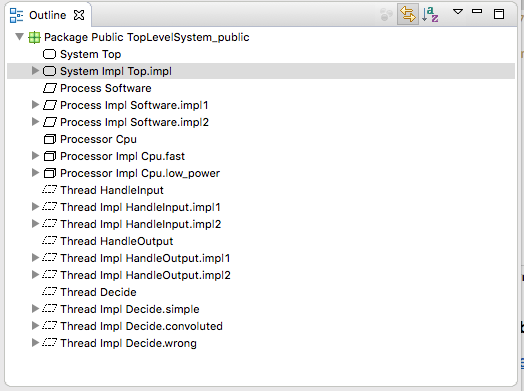

Open the .aadl file containing the top-level system implementation you want to instantiate.
(The file must reside in an open AADL Project in the "Package Explorer" view.)
Then right-click on a system implementation in the "Outline" view like this:
Next: Using DSE